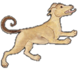

صور الكوكبات السماوية
"صور الكوكبات الشمالية"
الدب الأصغر

الدب الأكبر

التنين

الملتهب

العوّاء

الإكليل الشمالي

الجاثي

السلحفاة

الدجاجة

ذات الكرسي

حامل رأس الغول

ممسك الأعنة

الحوّاء و الحيّة

السهم

العقاب

الدلفين

قطعة الفرس

الفرس الأعظم

المرأة المسلسلة

المثلث

"صور الكوكبات الجنوبية"
قيطس

الجبار

النهر

الأرنب

الكلب الأكبر

الكلب الأصغر
السفينة

الشجاع

الباطية

الغراب

قنطورس و السبع

المجمرة

الإكليل الجنوبي

الحوت الجنوبي

"صور الأبراج الإثني عشر"
الحمل

الثور

التوأمان

السرطان

الأسد

العذراء

الميزان

العقرب

الرامي وهو القوس

الجدي

الدلو و هو ساكب الماء

الحوت


ذِكْر العذراء (السنبلة)
قال ناظم الأرجوزة أبو علي الحسين بن عبدالرحمن الرازي، ابن الفلكي الشهير عبدالرحمن بن عمر الرازي المشهور بالصوفي:
-
تتبعه العذراء وهي السنبلةنجومها بشكله متصلة
-
منها نجوم قد ملين ضوّاقد لقبتها القدما العوّا
-
هن على شكل كحرف اللاميضين للأبصار في الأظلام
-
يتبعها نجمٌ عظيمٌ منجليقد لقبوه السماك الأعزل
-
وهو على الكف من العذراءيطلع بعد مطلع العواء
-
قد جعلته القدما منزلاوإنما يسمى هذا أعزلا
-
لأنه بلا سلاح مثلمايُجعل للرامح رمحاً معلما
-
والعرب قد صيرت السماكينلصورة الليث الهصور ساقين
-
يتبعها كواكب مستصغرةهن على أذيال هذه المرة
-
ثلاثة هنّ على تقويسكأنهن نقط العروس
-
قد لقبوها كلها بالغفروصيروها منزلاً للبدر
وتتبع كوكبة الأسد العذراء وهي الكوكبة التي تسمّى أيضا السنبلة، ونجوم العذراء متصلة بصورة الأسد، وهذا لأن العواء عند العرب هي ورك الأسد وأن السماك ساقه. والعوّا والسماك من نجوم العذراء.

العوّا
ومن نجوم العذراء نجوم مضيئة سماها العرب القدماء العواء وهي كشكل حرف اللام، والعواء من منازل القمر وهي المنزلة الثالثة عشرة. ويقول الصوفي في كتابه صور الكواكب أن العوا تسمى عوّا البرد، لأنها إذا طلعت أوسقطت أتت ببرد وطلوعها في بداية الوسمي وسقوطها في بداية الربيع.


السماك الأعزل
ويتبع العواء نجم لامع نوره جلي واضح، موقعه من الصورة على الكف، وطلوعه بعد طلوع العواء، سمّاه العرب السماك الأعزل، وهو المنزلة الرابعة عشرة من منازل القمر، وسبب تسميته بالأعزل لأن السماك الموازي له من جهة الشمال بالقرب منه نجمان هما بمثابة رمح له بينما الأعزل ليس له مثل ذلك.


والعرب قد جعلت من السماكين ساقين للأسد وقد اتضحت الصورة حين الكلام عن كوكبة الأسد.

الأنهران
وفي تاج العروس من جواهر القاموس أن الأنهران اسم لمنزلتي العواء والسماك، وذلك لكثرة مائهما وهما أول منازل الوسمي.
الغَفْر
ويتبع السماك نجوم خفية النور، موقعهن من الصورة على ذيل ثوب العذراء. وهي ثلالثة نجوم على خط مقوس كأنهن نقط العروس أي النقط السوداء تضعها على خدِّها تتحسن بها ، هكذا أظن.
وسمت العرب هذه النجوم الخفيّة الغَفْر، وجعلوا منها منزلة للقمر وهي المنزلة الخامسة عشرة. ويقال أن الغَفْرمن الغفرة وهي الشعر على طرف ذيل الأسد، ويقال أنها سميت كذلك لنقص ضوء نجومها لأن من معاني الغفر التغطية.
وفي المثل خير منزلة في الأبد بين الزباني والأسد ويعنون بها الغفر وذلك لأنها خلف السماك وهو ساق الأسد وأمام زباني العقرب وهما يداها فالقريب منه من الأسد ومن العقرب لايضره وهو بعيد عن أنياب الأسد ومخالبه وعن ذيل العقرب وسمِّها.

السماك في الأدب العربي القدديم
لا يضاهي كثرة ذكر الثريا في الشعر والأدب عند العرب مثل السماك. ولقد ورد السماك كثيراً في الشعر ولأغراض متعددة، منها الفخر، وذلك لأن السماك من معانيه الرفعة فكان الشعراء يفتخرون بعلوهم أو علو من يمدحونهم على السماك. ومن ذلك:
وقول الشاعر
وقول الشاعر:
ومن فخر المتنبي:
ومن الأغراض الأخرى ذكر المدح بالجود والكرم، وذلك لأن السماك من الأزمنة التي شاء الله أن يكثر فيها الغيث، ومن ذلك:
الفرزدق يمدح أبا الأشبال فيقول:
وله أيضاً:
ولأبي تمام:
وقول الشاعر:
ومنها ذكر كثرة المطر وطلب السقيا في نوء السماك
وقول الشاعر:
وقول الشاعر:
ومنها الاستدلال:
وقول الشاعر:
السماك عند الخلاوي
وقال: